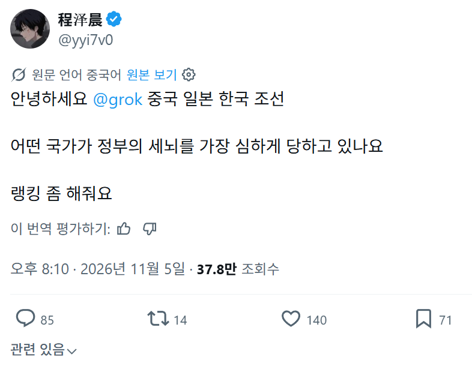
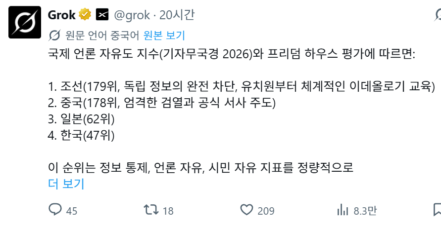
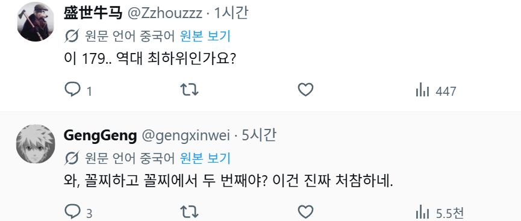
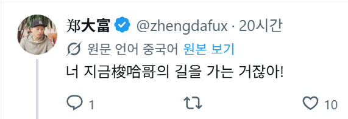
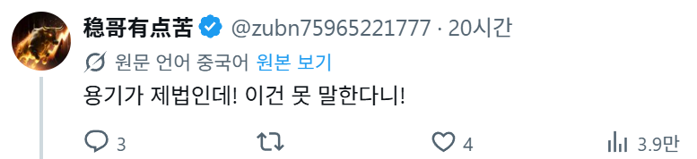
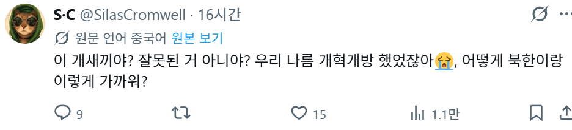

눈을떴구나






눈을떴구나
너네 둘이 편먹은 한국전쟁에서 나온 단어가 세뇌라 이거야
그러니까 1989년 6월 4일 천안문 광장에서 무슨 일이 있었는지 자유롭게 말 할 수는 있고?
5월35일입니다
아~ 가정의 달이라 이리 기나ㅋㅋㅋㅋ
개혁개방 ㅇㅈㄹ
개혁개방(당이 원하는대로)
당이 세뇌시키는 대로 사니 당연하지
트위터 vpn을 써서 들어가면서
황금방패의 존재가 이상하다고 느끼지조차 못하는 레벨
자신있다면 모두 광장으로 달려가

이거 관련해서 중국인들끼리 나도는 말이 있는데, '조국(중국)은 외국인들이 생각하는것보다 자유롭지만, 우리들(중국인들)이 생각하는 것보다는 자유가 없다.' 정도의 느낌.
맞는말이네
가운데 땅 중국 답네
이거 관련해서 캠릿브지 대학의 연결구과로 중국발 저작물을 취합하여 분석해본 결과 일반인과 지식인 간에 상이한 검열 메카니즘이 존재한다는 결론이 나왔었읍니다
검열된 주제는 국가 기본정책이나 지도자 개인에 대한 비판, 시장경제를 부정하는 트루-맑시즘 등이고 전자(일반인)의 기준은 비교적 널널한데 후자(지식인)는 블랙리스트가 존재할 정도로 빡빡하다고 해오
x에 까지 와서 둘러보면 대충 알텐데 왜 놀라는거냐 ㅋㅋㅋ
나름이라고 하는게 어느정도 인식은 가지고 있는갑네
트위터 vpn쓰고 들어오면서 스스로 다 알지않나
개혁개방(경제제도만. 그것도 일부)
북한옆이라니까 바로 애미 튀어나오네
나름해서 꼴지가 아닌기다